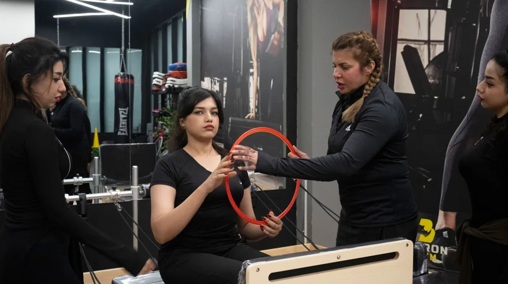

양정원, 지금 왜 난리일까? 필라테스 여신 이면에 숨겨진 반전 매력
사진: khezez | خزاز / Pexels (무료 이미지, 출처 표기)
혹시 '양정원'이라는 이름, 오늘 갑자기 눈에 띄지 않으셨나요? 평소 필라테스 강사이자 방송인으로 대중에게 잘 알려진 그녀의 이름이 오늘 대한민국 인터넷을 뜨겁게 달구며 실시간 검색어 1위에 올랐습니다. 과연 어떤 숨겨진 이야기가 그녀를 다시금 대중의 관심 속으로 끌어당겼을까요? 단순한 해프닝을 넘어, 양정원이라는 인물이 가진 다채로운 매력과 우리가 미처 몰랐던 놀라운 사실들을 지금부터 함께 파헤쳐 보겠습니다.

최근 한 교양 프로그램에 출연한 양정원은 평소의 활기찬 모습과는 사뭇 다른 지적인 면모를 선보였습니다. 특정 역사적 사건에 대한 깊이 있는 분석과 철학적인 질문에 막힘없이 답변하는 모습은 시청자들에게 신선한 충격을 안겼죠. 단순히 '예쁜 몸매를 가진 연예인'이라는 편견을 깨고, '뇌섹녀'로서의 반전 매력을 유감없이 발휘하며 순식간에 화제의 중심에 섰습니다.
필라테스 여신, 그 이상의 스펙: '뇌섹녀'의 반전 매력
많은 분들이 양정원 씨를 떠올리면 '필라테스'를 가장 먼저 생각하실 겁니다. 하지만 그녀의 이력은 생각보다 훨씬 화려하고 다채롭습니다. 연세대학교에서 생활디자인학을 전공한 그녀는 이후 연세대학교 교육대학원 체육교육학 석사 과정을 밟으며 전문성을 탄탄히 다졌습니다. 단순히 아름다운 외모뿐만 아니라 지성까지 겸비한 재원임을 증명하는 부분이죠.
그녀는 대학에서 무용을 전공하며 몸에 대한 깊은 이해를 쌓았고, 이를 바탕으로 필라테스 강사로서 독보적인 위치를 구축했습니다. 필라테스 국제 자격증은 물론, 발레와 현대무용 등 다양한 장르를 섭렵하며 끊임없이 자신을 발전시켜왔습니다. 방송 활동 외에도 대학교에서 학생들을 가르치는 겸임교수로 활동하며 이론과 실무를 겸비한 전문가로서의 면모를 보여주기도 했습니다.
그녀가 '피트니스 아이콘'이 되기까지의 남다른 여정
양정원 씨가 지금처럼 '피트니스 아이콘'으로 자리매김하기까지는 결코 순탄하지만은 않은 과정이 있었습니다. 어린 시절부터 무용에 대한 열정으로 가득했지만, 부상과 슬럼프를 겪으며 새로운 돌파구를 찾던 중 필라테스를 만나게 됩니다. 단순히 운동을 넘어 재활의 의미를 깨닫고, 필라테스의 치유 능력에 매료되어 강사의 길을 걷게 된 것이죠.
초기에는 연예인이라는 타이틀 때문에 그녀의 전문성이 제대로 평가받지 못하기도 했습니다. 하지만 그녀는 묵묵히 꾸준한 노력과 실력으로 편견을 깨뜨려 나갔습니다. 방송에서 쉽고 재미있게 필라테스를 소개하며 대중에게 필라테스라는 운동의 매력을 널리 알렸고, 직접 개발한 운동법으로 많은 사람들의 건강한 라이프스타일을 이끌었습니다.
대중이 열광하는 '양정원표' 건강 비결의 핵심
수많은 건강 정보가 넘쳐나는 시대에, 왜 유독 양정원 씨의 건강 비결에 대중은 열광할까요? 그 핵심은 바로 '꾸준함'과 '개개인의 몸에 대한 이해'에 있습니다. 그녀는 맹목적인 다이어트나 단기적인 효과보다는, 자신의 몸을 사랑하고 꾸준히 관리하는 습관의 중요성을 강조합니다.
그녀가 제안하는 건강 비결은 다음과 같습니다:
- 자세 교정의 중요성: 잘못된 자세는 통증과 불균형의 원인이 되므로, 일상생활 속에서 바른 자세를 유지하려 노력해야 합니다.
- 코어 근육 강화: 모든 움직임의 중심이 되는 코어 근육을 단련하는 것이 전신 건강의 기본입니다.
- 숨쉬기 운동의 생활화: 복식 호흡을 통해 스트레스를 완화하고 신체 순환을 돕는 것을 강조합니다.
- 즐거움을 찾는 운동: 지루함을 느끼지 않고 꾸준히 할 수 있는 운동을 찾아 흥미를 붙이는 것이 중요합니다.
- 식단 관리와 휴식: 건강한 식단과 충분한 휴식은 운동만큼이나 중요합니다.
이러한 비결들은 단순히 몸매를 가꾸는 것을 넘어, 건강한 삶의 질을 높이는 데 초점을 맞추고 있습니다. 그녀의 진심 어린 메시지가 대중에게 깊이 공감대를 형성하는 이유입니다.
시간이 지나도 변치 않는 양정원의 영향력
양정원 씨는 단순히 반짝하고 사라지는 유행이 아닙니다. 그녀는 대한민국 필라테스 대중화에 큰 영향을 미 미쳤으며, 건강한 아름다움의 상징이자 긍정적인 에너지의 표본으로 자리매김했습니다. 쏟아지는 정보의 홍수 속에서도, 그녀는 늘 정확하고 신뢰할 수 있는 정보를 전달하려 노력합니다. 이는 꾸준히 그녀를 지지하는 두터운 팬층을 형성하는 원동력이기도 합니다.
이번 검색어 급상승 역시, 그녀가 가진 다양한 매력과 잠재력이 다시금 수면 위로 떠오르는 계기가 되었습니다. 필라테스 전문가로서의 면모뿐만 아니라, 지성미와 인간미 넘치는 모습으로 대중에게 새로운 영감을 선사하는 양정원 씨의 앞으로의 행보가 더욱 기대됩니다. 그녀는 앞으로 또 어떤 놀라운 모습으로 우리를 놀라게 할까요? 그 변화와 성장을 계속해서 지켜보는 것이 흥미로운 관전 포인트가 될 것입니다.
🔗 이 글도 함께 보면 좋아요: 조혜련, 갑자기 왜 난리일까? 베테랑 방송인의 놀라운 반전 매력
관련 추천 상품
이 포스팅은 쿠팡 파트너스 활동의 일환으로, 이에 따른 일정액의 수수료를 제공받습니다.